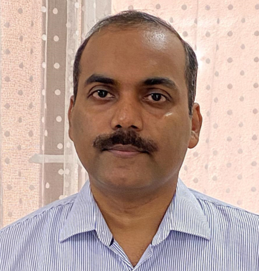

climate.lab@cas.iitd.ac.in
Meet the Team
Climate Dynamics Lab, Centre for Atmospheric Sciences, IIT Delhi
Our Team
Meet the researchers and scholars driving climate science forward
Principal Investigator

Dr. S. Sandeep
Associate Professor
Dr. Sandeep leads the Climate Dynamics Lab and specializes in Indian monsoon dynamics, climate modeling, and AI applications in atmospheric science. He earned his Ph.D. from IISc Bangalore and has held positions at NYU Abu Dhabi, the University of Oslo, and IIT Kharagpur.
Ph.D. Students

Jane Doe
Ph.D. Scholar
Researching extreme monsoon events and their links to tropical wave dynamics.

Rahul Sharma
Ph.D. Scholar
Applying machine learning techniques for long-range monsoon prediction.
M.Tech Students

Priya Verma
M.Tech Student
Modeling dry air intrusions and their impact on convective rainfall over central India.
Alumni

Anjali Mehta
Former Ph.D. Student
Now a Research Scientist at the Indian Meteorological Department. Worked on climate model biases in monsoon simulations.